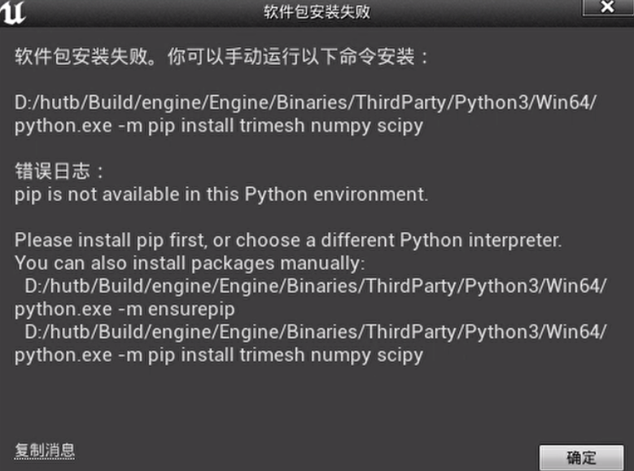

导入 MJCF 时 XML 报“未知扩展名 stl”问题分析与解决方案
1. 现象
把 MuJoCo 的 *.xml 从资源管理器拖进内容编辑器后，每个 STL 网格都报：
导入“D:/.../unitree_z1/assets/z1_Link06.stl”失败。未知扩展名“stl”。
2. 结论
总的来说，没有下载clean_meshes.py所要用的包，以至于clean_meshes.py没有起作用。最终导致的报错。
- 1.
EnsurePythonReady(MujocoImportFactory.cpp:122)是python编译器以及对应包的准备环节，最主要的就是if (!InstallPythonPackages(PythonPath, InstallLog))，（MjPythonHelper.cpp:308）的判断，从而取决于if (!bPackagesPresent)对于这个的判断。但是应该是没有包的，应该会下载包，但是通过这张图可以看到安装失败。所以没有安装clean_meshes.py所要用的包。
- 但是在
clean_meshes.py为什么这里不报错？clean_meshes.py没报错是因为错误被吞掉了。由于包trimesh和np只clean_mesh和convert_mesh这个函数里面用并且clean_mesh这个函数只在convert_mesh函数里面用，但是convert_mesh这个函数的报错没有传出去，然后往下走所以网格并没有被清洗所以导致没有将stl转换成obj。最终就会报未知扩展名“stl”。convert_mesh()把每个网格的异常都 catch 了（clean_meshes.py:101-103）：
except Exception as e:
print(f" x Error: {e}")
return False
调用处（clean_meshes.py:252-255）：
if convert_mesh(actual_source, output_glb):
success_count += 1
else:
print(f" x FAILED to convert {actual_source.name}")
失败只打印，不改变进程退出码。随后脚本仍然写出 _ue.xml（clean_meshes.py:259），main() 里也没有 sys.exit(1)（clean_meshes.py:268-282）所以 ReturnCode == 0 只代表“脚本没崩”，不代表 GLB 生成成功。
为什么EnsurePythonReady函数被注释了，还会执行到clean_meshes.py脚本？
- 2.由于一开始在准备环境的时候，并不会出现弹窗（被注释掉了,所以其中
bOutCancelled一直都为false，PythonPath也走到了最后,中间没有return FString()）。所以在调用EnsurePythonReady(MujocoImportFactory.cpp:122)函数时从而导致bOutCancelled一直都为false，导致不会出现if (bCancelled)(MujocoImportFactory.cpp:124)返回空的情况。也就不会在这里报错。然后PythonPath也走到了最后,中间没有return FString()。所以PythonPath也存在，就会继续往下执行。
3. 完整调用链
下面按一次拖入 XML 的实际执行顺序列出调用链（行号以当前 hutb 仓库为准）：
UMujocoImportFactory::FactoryCanImport(Filename) // MujocoImportFactory.cpp:60
└─ UMujocoImportFactory::FactoryCreateFile(...) // :66
├─ FKismetEditorUtilities::CreateBlueprint(...) // 创建蓝图
├─ FMjPythonHelper::EnsurePythonReady(bCancelled) // :122 → MjPythonHelper.cpp:179
│ ├─ ResolvePythonPath() // MjPythonHelper.cpp:102
│ │ ├─ GetStoredPythonOverride() // ini 里的 PythonPath
│ │ ├─ GetUEBundledPythonPath() // UE 自带 Python
│ │ └─ TEXT("python") // PATH 回退
│ ├─ ValidatePythonBinary(PythonPath) // :122
│ ├─ CheckPythonPackages(PythonPath) // :136
│ │ └─ python -c "import trimesh; import numpy; import scipy" // :140
│ └─ InstallPythonPackages(PythonPath, InstallLog) // :144
│ └─ python -m pip install trimesh numpy scipy // :168
├─ FPlatformProcess::ExecProcess(PythonExe, Args, ...) // MujocoImportFactory.cpp:140
│ └─ clean_meshes.py <model>.xml // Scripts/clean_meshes.py
│ ├─ convert_mesh(actual_source, output_glb) // clean_meshes.py:64
│ │ ├─ trimesh.load(...) / clean_mesh(...) // 解析、清洗
│ │ ├─ cleaned_mesh.export(...) // 导出 GLB
│ │ └─ except Exception → print + return False // :101-103 ★ 异常被吞掉
│ ├─ tree.write(<model>_ue.xml) // :259 失败也写
│ └─ main() 无 sys.exit(1) // :268-282 → 退出码 0
├─ if (ReturnCode == 0 && _ue.xml 存在) // MujocoImportFactory.cpp:142-153
│ └─ ActualXmlPath = <model>_ue.xml // 仍引用 .stl
└─ Generator->GenerateForBlueprint(NewBP, ActualXmlPath) // :200
└─ UMujocoGenerationAction::ParseAssetsRecursive(...) // MujocoXmlParser.cpp:1027
├─ <compiler meshdir="assets"> // :1044
├─ MeshAssets[name] = .../assets/xxx.stl // :1101-1106
└─ ImportSingleMesh(MeshFile, MeshImportPath) // :471
└─ UMujocoGenerationAction::ImportSingleMesh(...) // MujocoMeshImporter.cpp:43
├─ BasePath = 去掉扩展名 // :60
├─ 按 FBX > GLB > GLTF 查同目录 // :60-76
│ ├─ 找到 .glb → ActualSourcePath = .glb // 正常路径
│ └─ 都没有 → 保留 .stl // ★ 本次失败路径
└─ AttemptMeshImport(ActualSourcePath, ...) // :120
├─ Extension == fbx/obj/t3d → Factory = UFbxFactory // :141
└─ 其他（stl）→ Factory = nullptr // :200
└─ AssetTools.ImportAssetTasks(ImportTasks) // :216 → AssetTools.cpp:1144
└─ UAssetToolsImpl::ImportAssetsInternal(...) // AssetTools.cpp:1666
├─ FactoriesPtr = ExtensionToFactoriesMap.Find("glb") // :1847
│ └─ 找到 GLTFImportFactory → Factory->ImportObject(...) // 正常路径
└─ FactoriesPtr = ExtensionToFactoriesMap.Find("stl") // :1847
└─ nullptr → else
├─ LOCTEXT("ImportFailed_UnknownExtension", ...) // :1887
└─ UE_LOG(LogAssetTools, Warning, "%s") // :1895
→ 导入“...stl”失败。未知扩展名“stl”。
关键点：
ReturnCode == 0和_ue.xml存在 不代表 GLB 生成成功；convert_mesh的异常会被except吞掉，脚本仍写 XML、仍退出 0。ImportSingleMesh只检查同名.glb是否存在，不检查大小/文件头：没有 GLB → 回退.stl；0 字节 GLB →Invalid GLTF header!。- 真正的报错来自引擎 AssetTools（
LogAssetTools），插件只是因为找不到 GLB，才把.stl交给它。 - 如果
EnsurePythonReady返回空，会跳过ExecProcess，直接从GenerateForBlueprint开始走后半段。
4.解决方案
在首次将xml文件拖入内容编辑器后让用户做选择，点击“是”就下载对应的包，这样就能够执行clean_meshes.py有对应的包。点击“否”就进行选择本地的python编译器，点击取消就会bCancelled=true就直接退出导入（MujocoImportFactory.cpp:124就不会再往下走）。